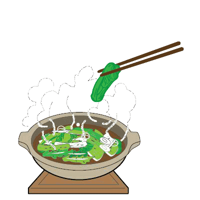
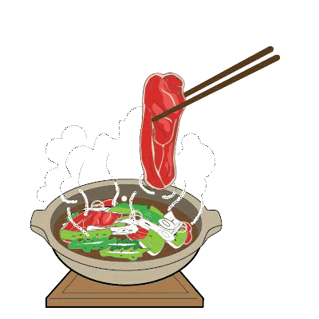
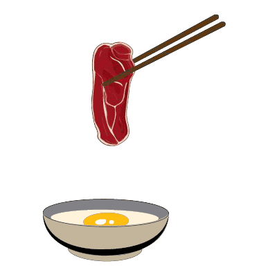
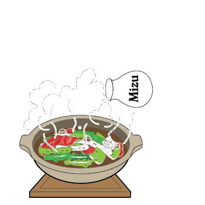
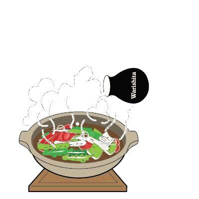
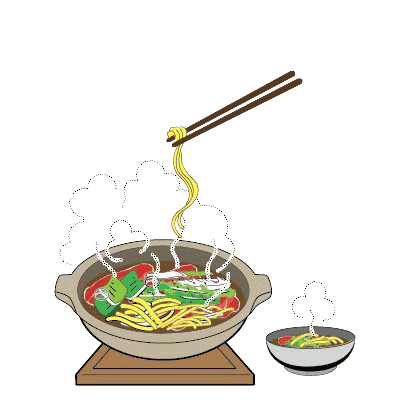
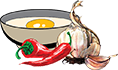
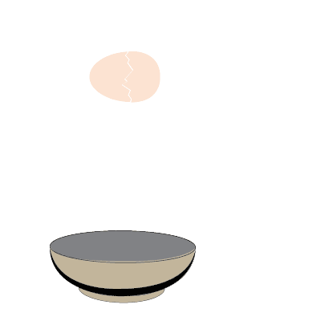
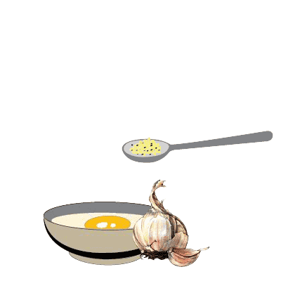
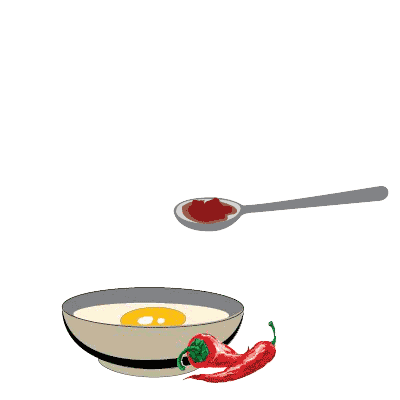

Nét đặc sắc hương vị truyền thống Nhật
Là một ẩm thực trứ danh gắn liền với lịch sử lâu đời của Nhật Bản. Được lưu hành rộng rãi và phổ biến của thời đại Minh Trị. Nước chấm trứng tươi hòa quyện cùng vị ngọt, mềm của thịt bò cùng dư vị đậm đà của nước lẩu Sukiyaki, tất cả như tan trên đầu lưỡi, đọng lại những vị giác ngọt ngào, ngây ngất, khó quên.
Sukiyaki là một món ăn có một lịch sử lâu đời với sự khác biệt trong văn hoá thưởng thức của từng vùng miền tạo nên từng vị khác nhau. Sukiyaki có nguồn gốc từ món lẩu bò tại vùng Kantou nước Nhật, một món ăn được lưu hành rộng rãi theo sự biến đổi của văn hóa thời đại Minh Trị. Người ta tạo ra một loại gia vị có tên là Warishita được pha chế từ nước tương, đường, Mirin, rượu, rồi sau đó nấu chín các nguyên liệu gồm rau và thịt. Ở vùng Kansai thì họ không sử dụng Warishita, đầu tiên họ sẽ nướng thịt lên, sau đó tẩm gia vị ưa thích lên như đường và tương, sau cùng là bỏ rau vào.
Sukiyaki tại Mo Mo Paradise được nấu theo phong cách Sukiyaki của vùng
Kantou. Với nước xốt Warishita được nhập trực tiếp 100% từ Nhật Bản. Mang đậm
hướng sắc, khẩu vị Lẩu truyền thống trứ danh của Nhật Bản.
Sự khác biệt của Sukiyaki không chỉ ở hương vị đậm đà mà chính là cách thưởng
thức vô cùng độc đáo. Những lát thịt bò Úc thượng hạng được nhúng cùng nước lẩu đậm
đà, ngây ngất rồi chấm cùng nước chấm Trứng tươi đánh nhuyễn. Khi đó, độ nóng của
Thịt Bò vừa chín tới tạo thành một màng mỏng Trứng bám bên ngoài. Sự mềm mại, béo
ngậy của Trứng hòa quyện cùng vị ngọt, mềm của thịt Bò và vị đậm đà của nước lẩu
Sukiyaki, tất cả như tan trên đầu lưỡi, đọng lại những dư vị tuyệt vời nhất không lẫn vàođâu được, ngọt ngào, ngây ngất, khó quên.
Lẩu Sukiyaki là một sự lựa chọn hài hòa đối với các thực khách Việt luôn yêu
thích dư vị đậm đà, ngất ngây của ẩm thực.
Cách thưởng thức Sukiyaki
-

Trước khi nước lẩu sôi, hãy cho các rau củ (hành paro, hành tây) vào nước lẩu và để sôi trong vài phút
-

Cho từng lát thịt vào nước lẩu
-

Khi thịt vừa chín tới hãy nhúng vào trứng tươi
-

Cho thêm Mizu khi nước lẩu cạn để nước lẩu vừa ăn hơn
-

Cho thêm Warishita khi nước lẩu nhạt
-

Hãy kèm thêm Udon để thưởng thức trọn vẹn hương vị lẩu Sukiyaki
 Sự hòa quyện hoàn hảo của nước chấm
-

Đánh đều trứng tươi - Sử dụng như nước chấm
-

Thêm tỏi và tiêu xay để tăng hương vị của nước chấm
-

Thêm ớt nếu bạn thích vị cay